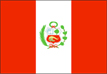
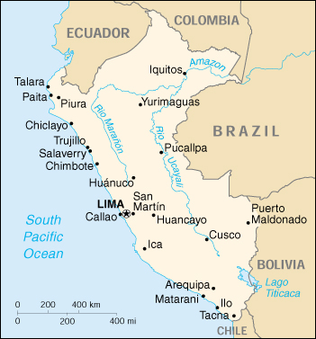

{kind=link}


| Peru |  |
|
|  | |
| Introduction |
Background: After a dozen years of military rule, Peru returned to democratic leadership in 1980. In recent years, bold reform programs and significant progress in curtailing guerrilla activity and drug trafficking have resulted in solid economic growth.
| Geography |
Location: Western South America, bordering the South Pacific Ocean, between Chile and Ecuador
Geographic coordinates: 10 00 S, 76 00 W
Map references: South America
Area:
total:
1,285,220 sq km
land:
1.28 million sq km
water:
5,220 sq km
Area - comparative: slightly smaller than Alaska
Land boundaries:
total:
5,536 km
border countries:
Bolivia 900 km, Brazil 1,560 km, Chile 160 km, Colombia 1,496 km (est.), Ecuador 1,420 km
Coastline: 2,414 km
Maritime claims:
continental shelf:
200 nm
territorial sea:
200 nm
Climate: varies from tropical in east to dry desert in west; temperate to frigid in Andes
Terrain: western coastal plain (costa), high and rugged Andes in center (sierra), eastern lowland jungle of Amazon Basin (selva)
Elevation extremes:
lowest point:
Pacific Ocean 0 m
highest point:
Nevado Huascaran 6,768 m
Natural resources: copper, silver, gold, petroleum, timber, fish, iron ore, coal, phosphate, potash, hydropower
Land use:
arable land:
3%
permanent crops:
0%
permanent pastures:
21%
forests and woodland:
66%
other:
10% (1993 est.)
Irrigated land: 12,800 sq km (1993 est.)
Natural hazards: earthquakes, tsunamis, flooding, landslides, mild volcanic activity
Environment - current issues: deforestation (some the result of illegal logging); overgrazing of the slopes of the costa and sierra leading to soil erosion; desertification; air pollution in Lima; pollution of rivers and coastal waters from municipal and mining wastes
Environment - international agreements:
party to:
Antarctic-Environmental Protocol, Antarctic Treaty, Biodiversity, Climate Change, Desertification, Endangered Species, Hazardous Wastes, Nuclear Test Ban, Ozone Layer Protection, Ship Pollution, Tropical Timber 83, Tropical Timber 94, Wetlands, Whaling
signed, but not ratified:
Climate Change-Kyoto Protocol
Geography - note: shares control of Lago Titicaca, world's highest navigable lake, with Bolivia
| People |
Population: 27,012,899 (July 2000 est.)
Age structure:
0-14 years:
35% (male 4,776,074; female 4,628,899)
15-64 years:
61% (male 8,224,829; female 8,119,751)
65 years and over:
4% (male 579,465; female 683,881) (2000 est.)
Population growth rate: 1.75% (2000 est.)
Birth rate: 24.48 births/1,000 population (2000 est.)
Death rate: 5.84 deaths/1,000 population (2000 est.)
Net migration rate: -1.1 migrant(s)/1,000 population (2000 est.)
Sex ratio:
at birth:
1.05 male(s)/female
under 15 years:
1.03 male(s)/female
15-64 years:
1.01 male(s)/female
65 years and over:
0.85 male(s)/female
total population:
1.01 male(s)/female (2000 est.)
Infant mortality rate: 40.6 deaths/1,000 live births (2000 est.)
Life expectancy at birth:
total population:
70.01 years
male:
67.63 years
female:
72.5 years (2000 est.)
Total fertility rate: 3.04 children born/woman (2000 est.)
Nationality:
noun:
Peruvian(s)
adjective:
Peruvian
Ethnic groups: Amerindian 45%, mestizo (mixed Amerindian and white) 37%, white 15%, black, Japanese, Chinese, and other 3%
Religions: Roman Catholic 90%
Languages: Spanish (official), Quechua (official), Aymara
Literacy:
definition:
age 15 and over can read and write
total population:
88.7%
male:
94.5%
female:
83% (1995 est.)
| Government |
Country name:
conventional long form:
Republic of Peru
conventional short form:
Peru
local long form:
Republica del Peru
local short form:
Peru
Data code: PE
Government type: constitutional republic
Capital: Lima
Administrative divisions:
24 departments (departamentos, singular - departamento) and 1 constitutional province* (provincia constitucional); Amazonas, Ancash, Apurimac, Arequipa, Ayacucho, Cajamarca, Callao*, Cusco, Huancavelica, Huanuco, Ica, Junin, La Libertad, Lambayeque, Lima, Loreto, Madre de Dios, Moquegua, Pasco, Piura, Puno, San Martin, Tacna, Tumbes, Ucayali
note:
the 1979 constitution mandated the creation of regions (regiones, singular - region) to function eventually as autonomous economic and administrative entities; so far, 12 regions have been constituted from 23 of the 24 departments - Amazonas (from Loreto), Andres Avelino Caceres (from Huanuco, Pasco, Junin), Arequipa (from Arequipa), Chavin (from Ancash), Grau (from Tumbes, Piura), Inca (from Cusco, Madre de Dios, Apurimac), La Libertad (from La Libertad), Los Libertadores-Huari (from Ica, Ayacucho, Huancavelica), Mariategui (from Moquegua, Tacna, Puno), Nor Oriental del Maranon (from Lambayeque, Cajamarca, Amazonas), San Martin (from San Martin), Ucayali (from Ucayali); formation of another region has been delayed by the reluctance of the constitutional province of Callao to merge with the department of Lima; because of inadequate funding from the central government and organizational and political difficulties, the regions have yet to assume major responsibilities; the 1993 constitution retains the regions but limits their authority; the 1993 constitution also reaffirms the roles of departmental and municipal governments
Independence: 28 July 1821 (from Spain)
National holiday: Independence Day, 28 July (1821)
Constitution: 31 December 1993
Legal system: based on civil law system; has not accepted compulsory ICJ jurisdiction
Suffrage: 18 years of age; universal
Executive branch:
chief of state:
President Alberto Kenyo FUJIMORI Fujimori (since 28 July 1990); note - the president is both the chief of state and head of government; additionally there are two vice presidents
head of government:
President Alberto Kenyo FUJIMORI Fujimori (since 28 July 1990); note - the president is both the chief of state and head of government; additionally there are two vice presidents
note:
Prime Minister Alberto BUSTAMANTE (since 13 October 1999) does not exercise executive power; this power is in the hands of the president
cabinet:
Council of Ministers appointed by the president
elections:
president elected by popular vote for a five-year term; election last held 9 April 1995 (next to be held 9 April 2000)
election results:
President FUJIMORI reelected; percent of vote - Alberto FUJIMORI 64.42%, Javier PEREZ de CUELLAR 21.80%, Mercedes CABANILLAS 4.11%, other 9.67%
Legislative branch:
unicameral Democratic Constituent Congress or Congresso Constituyente Democratico (120 seats; members are elected by popular vote to serve five-year terms)
elections:
last held 9 April 1995 (next to be held 9 April 2000)
election results:
percent of vote by party - C90/NM 52.1%, UPP 14%, other parties 33.9%; seats by party - C90/NM 67, UPP 17, APRA 8, FIM 6, CODE-Pais Posible 5, AP 4, PPC 3, Renovation Party 3, IU 2, OBRAS 2, other parties 3
Judicial branch: Supreme Court of Justice or Corte Suprema de Justicia, judges are appointed by the National Council of the Judiciary
Political parties and leaders: American Popular Revolutionary Alliance or APRA [Luis ALVA Castro]; Change 90-New Majority or C90/NM [Alberto FUJIMORI]; Civic Works Movement or OBRAS [Ricardo BELMONT]; Democratic Coordinator or CODE-Pais Posible [Jose BARBA Caballero and Alejandro TOLEDO]; Independent Agrarian Movement or MIA [leader NA]; Independent Moralizing Front or FIM [Fernando OLIVERA Vega]; Peru 2000 [Alberto FUJIMORI]; coalition of C90/NM and Vamos Vecino; Popular Action Party or AP [Juan DIAZ Leon]; Popular Christian Party or PPC [Luis BEDOYA Reyes]; Renovation Party [Rafael REY Rey]; Union for Peru or UPP [Javier PEREZ de CUELLAR]; United Left or IU [leader NA]; Vamos Vecino or VV [leader NA]
Political pressure groups and leaders: leftist guerrilla groups include Shining Path [Abimael GUZMAN Reynoso (imprisoned), Gabriel MACARIO (top leader at-large)]; Tupac Amaru Revolutionary Movement or MRTA [Victor POLAY (imprisoned), Hugo AVALLENEDA Valdez (top leader at-large)]
International organization participation: APEC, CAN, CCC, ECLAC, FAO, G-11, G-15, G-19, G-24, G-77, IADB, IAEA, IBRD, ICAO, ICC, ICFTU, ICRM, IDA, IFAD, IFC, IFRCS, IHO, ILO, IMF, IMO, Inmarsat, Intelsat, Interpol, IOC, IOM, ISO (correspondent), ITU, LAES, LAIA, NAM, OAS, OPANAL, OPCW, PCA, RG, UN, UNCTAD, UNESCO, UNIDO, UPU, WCL, WFTU, WHO, WIPO, WMO, WToO, WTrO
Diplomatic representation in the US:
chief of mission:
Ambassador Alfonso RIVERO Monsalve
chancery:
1700 Massachusetts Avenue NW, Washington, DC 20036
telephone:
[1] (202) 833-9860 through 9869
FAX:
[1] (202) 659-8124
consulate(s) general:
Chicago, Houston, Los Angeles, Miami, New York, Paterson (New Jersey), San Francisco
Diplomatic representation from the US:
chief of mission:
Ambassador John HAMILTON
embassy:
Avenida Encalada, Cuadra 17, Monterrico, Lima
mailing address:
P. O. Box 1995, Lima 1; American Embassy (Lima), APO AA 34031-5000
telephone:
[51] (1) 434-3000
FAX:
[51] (1) 434-3037
Flag description: three equal, vertical bands of red (hoist side), white, and red with the coat of arms centered in the white band; the coat of arms features a shield bearing a llama, cinchona tree (the source of quinine), and a yellow cornucopia spilling out gold coins, all framed by a green wreath
| Economy |
Economy - overview: The Peruvian economy has become increasingly market-oriented, with major privatizations completed since 1990 in the mining, electricity, and telecommunications industries. Thanks to strong foreign investment and the cooperation between the FUJIMORI government and the IMF and World Bank, growth was strong in 1994-97 and inflation was brought under control. In 1998, El Nino's impact on agriculture, the financial crisis in Asia, and instability in Brazilian markets undercut growth. And 1999 was another lean year for Peru, with the aftermath of El Nino and the Asian financial crisis working its way through the economy. Lima did manage to complete negotiations for an Extended Fund Facility with the IMF in June 1999, although it subsequently had to renegotiate the targets. Pressure on spending is growing in the run-up to the 2000 elections. Nevertheless, improved commodity prices and the recovery of the fishing sector should help drive GDP growth above the 5% mark in 2000.
GDP: purchasing power parity - $116 billion (1999 est.)
GDP - real growth rate: 2.4% (1999 est.)
GDP - per capita: purchasing power parity - $4,400 (1999 est.)
GDP - composition by sector:
agriculture:
13%
industry:
42%
services:
45% (1998)
Population below poverty line: 54% (1991 est.)
Household income or consumption by percentage share:
lowest 10%:
1.9%
highest 10%:
34.3% (1994)
Inflation rate (consumer prices): 5.5% (1999 est.)
Labor force: 7.6 million (1996 est.)
Labor force - by occupation: agriculture, mining and quarrying, manufacturing, construction, transport, services
Unemployment rate: 7.7%; extensive underemployment (1997)
Budget:
revenues:
$8.5 billion
expenditures:
$9.3 billion, including capital expenditures of $2 billion (1996 est.)
Industries: mining of metals, petroleum, fishing, textiles, clothing, food processing, cement, auto assembly, steel, shipbuilding, metal fabrication
Industrial production growth rate: 1.2% (1996)
Electricity - production: 18.28 billion kWh (1998)
Electricity - production by source:
fossil fuel:
24.53%
hydro:
74.79%
nuclear:
0%
other:
0.68% (1998)
Electricity - consumption: 17.002 billion kWh (1998)
Electricity - exports: 0 kWh (1998)
Electricity - imports: 2 million kWh (1998)
Agriculture - products: coffee, cotton, sugarcane, rice, wheat, potatoes, plantains, coca; poultry, beef, dairy products, wool; fish
Exports: $5.9 billion (f.o.b., 1999 est.)
Exports - commodities: fish and fish products, copper, zinc, gold, crude petroleum and byproducts, lead, coffee, sugar, cotton
Exports - partners: US 25%, China 8%, Japan 7%, Switzerland, Germany, UK, Brazil (1997)
Imports: $8.4 billion (c.i.f., 1999 est.)
Imports - commodities: machinery, transport equipment, foodstuffs, petroleum, iron and steel, chemicals, pharmaceuticals
Imports - partners: US 19%, Colombia 6%, Venezuela 5%, Chile 4%, Brazil 4% (1997)
Debt - external: $31 billion (1998 est.)
Economic aid - recipient: $895.1 million (1995)
Currency: 1 nuevo sol (S/.) = 100 centimos
Exchange rates: nuevo sol (S/.) per US$1 - 3.500 (January 2000), 3.383 (1999), 2.930 (1998), 2.664 (1997), 2.453 (1996), 2.253 (1995)
Fiscal year: calendar year
| Communications |
Telephones - main lines in use: 1.509 million (1998)
Telephones - mobile cellular: 504,995 (1998)
Telephone system:
adequate for most requirements
domestic:
nationwide microwave radio relay system and a domestic satellite system with 12 earth stations
international:
satellite earth stations - 2 Intelsat (Atlantic Ocean); Pan American submarine cable
Radio broadcast stations: AM 472, FM 198, shortwave 189 (1999)
Radios: 6.65 million (1997)
Television broadcast stations: 13 (plus 112 repeaters) (1997)
Televisions: 3.06 million (1997)
Internet Service Providers (ISPs): 15 (1999)
| Transportation |
Railways:
total:
1,988 km
standard gauge:
1,608 km 1.435-m gauge
narrow gauge:
380 km 0.914-m gauge
Highways:
total:
72,900 km
paved:
8,700 km
unpaved:
64,200 km (1999 est.)
Waterways: 8,600 km of navigable tributaries of Amazon system and 208 km of Lago Titicaca
Pipelines: crude oil 800 km; natural gas and natural gas liquids 64 km
Ports and harbors:
Callao, Chimbote, Ilo, Matarani, Paita, Puerto Maldonado, Salaverry, San Martin, Talara, Iquitos, Pucallpa, Yurimaguas
note:
Iquitos, Pucallpa, and Yurimaguas are all on the upper reaches of the Amazon and its tributaries
Merchant marine:
total:
7 ships (1,000 GRT or over) totaling 65,193 GRT/100,584 DWT
ships by type:
bulk 1, cargo 6 (1999 est.)
Airports: 234 (1999 est.)
Airports - with paved runways:
total:
44
over 3,047 m:
7
2,438 to 3,047 m:
17
1,524 to 2,437 m:
12
914 to 1,523 m:
7
under 914 m:
1 (1999 est.)
Airports - with unpaved runways:
total:
190
over 3,047 m:
1
2,438 to 3,047 m:
2
1,524 to 2,437 m:
26
914 to 1,523 m:
67
under 914 m:
94 (1999 est.)
| Military |
Military branches: Army (Ejercito Peruano), Navy (Marina de Guerra del Peru; includes Naval Air, Marines, and Coast Guard), Air Force (Fuerza Aerea del Peru), National Police (Policia Nacional)
Military manpower - military age: 20 years of age
Military manpower - availability:
males age 15-49:
7,059,079 (2000 est.)
Military manpower - fit for military service:
males age 15-49:
4,752,112 (2000 est.)
Military manpower - reaching military age annually:
males:
268,646 (2000 est.)
Military expenditures - dollar figure: $1.3 billion (FY98)
Military expenditures - percent of GDP: 2% (FY98)
| Transnational Issues |
Disputes - international: demarcation of the agreed-upon border with Ecuador was completed in May 1999
Illicit drugs: until recently the world's largest coca leaf producer, Peru has reduced the area of coca under cultivation by 24% to 38,700 hectares at the end of 1999; most of cocaine base is shipped to neighboring Colombia, Bolivia, and Brazil for processing into cocaine for the international drug market, but exports of finished cocaine are increasing by maritime conveyance to Mexico, US, and Europe